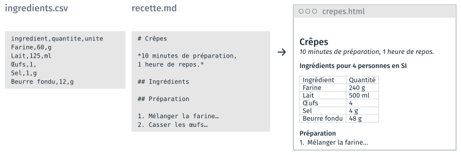
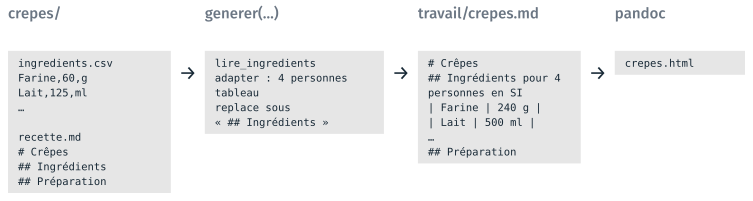

Chemins et programmes externes#
Cette partie part d’un programme qui produit une page de recette, et de son
code de départ, dont les chemins sont écrits en dur. Elle présente les trois
bibliothèques de la séance, puis deux d’entre elles : pathlib, qui construit
les chemins à partir d’une seule racine, et subprocess, qui lance pandoc
depuis Python. La troisième, argparse, est présentée dans la page Du
notebook au programme. Un TD accompagne cette
partie, le notebook recette.ipynb du TD 3b ; il est présenté en fin de page.
Le programme de la recette#
Le programme génère une recette avec les quantités et les unités adaptées au nombre de personnes. Il lit un fichier CSV, qui donne les quantités pour une personne, et un fichier Markdown, qui contient le texte de la recette sans le tableau des ingrédients. Il produit une page HTML.

Les deux fichiers de la recette des crêpes, et la page produite pour quatre personnes, en unités SI.#
Chaque recette a son dossier, qui contient les deux mêmes fichiers. Le
programme écrit ses résultats dans travail/, et ne modifie jamais depart/.
3b_recette/
├── depart/
│ ├── notebook/recette.ipynb ← le notebook livré, à copier dans travail/
│ ├── recettes/
│ │ ├── crepes/
│ │ │ ├── ingredients.csv ← les quantités pour une personne
│ │ │ └── recette.md ← le texte, sans tableau des ingrédients
│ │ ├── mousse_chocolat/
│ │ ├── pate_pizza/
│ │ └── salade_lentilles/
│ └── style.css
└── travail/ ← le notebook et les fichiers produits
Le programme procède en deux étapes. La fonction generer lit les
ingrédients, adapte les quantités au nombre de personnes, et insère leur
tableau dans le texte, sous le titre ## Ingrédients, qu’elle remplace par un
titre qui donne le nombre de personnes et les unités. Elle écrit le résultat
dans travail/crepes.md. pandoc convertit ensuite ce fichier Markdown en page
HTML.

Des fichiers de la recette à la page HTML : generer, puis pandoc.#
Les fonctions utiles du programme sont données dans le notebook :
Fonction |
Ce qu’elle reçoit |
Ce qu’elle renvoie |
|---|---|---|
|
le chemin de |
une liste de tuples |
|
cette liste, un nombre de personnes, |
la liste, quantités multipliées, et converties en onces et en tasses si
|
|
une liste d’ingrédients |
le tableau Markdown des ingrédients, en une chaîne |
Le code de départ et ses trois problèmes#
Le code de départ écrit chaque chemin en entier, depuis la racine du disque :
ingredients = lire_ingredients("C:/Users/alice/Desktop/cours3/3b_recette/depart/recettes/crepes/ingredients.csv")
ingredients = adapter(ingredients, 4, "SI")
with open("C:/Users/alice/Desktop/cours3/3b_recette/depart/recettes/crepes/recette.md", encoding="utf-8") as fichier:
source = fichier.read()
complete = source.replace("## Ingrédients", "## Ingrédients pour 4 personnes en SI\n\n" + tableau(ingredients))
with open("C:/Users/alice/Desktop/cours3/3b_recette/travail/crepes.md", "w", encoding="utf-8") as fichier:
fichier.write(complete)
Sur un autre poste, la première ligne lève une erreur FileNotFoundError : le
dossier C:/Users/alice/… n’existe pas. Chaque élève doit remplacer ce début
de chemin par celui de son dossier, lu dans la barre d’adresse de
l’explorateur de fichiers ; les \ de Windows s’y remplacent par des /. Le
code fonctionne alors, mais toujours sur un seul poste.
Problème |
Correction dans |
|
|---|---|---|
1 |
le même début de chemin écrit trois fois : trois lignes à modifier pour changer de poste ou de recette |
une seule racine, les autres chemins construits avec |
2 |
un chemin absolu, propre à un poste : |
la racine déduite du dossier courant, |
3 |
la page HTML à produire à la main : pandoc lancé dans le terminal après le programme |
pandoc lancé par le programme, avec |
Le notebook place d’abord le programme dans une fonction, generer, dont les
trois chemins sont les paramètres. Le corps de la fonction ne contient plus
aucun chemin ; les chemins sont passés à l’appel. La suite ne change plus que
la façon de construire ces trois chemins.
Trois bibliothèques de la séance#
Les améliorations du programme s’écrivent avec la bibliothèque standard de
Python, livrée avec Python : ses bibliothèques s’importent sans installation.
La documentation de chacune est à l’adresse docs.python.org/fr/3/library/
suivie de son nom.
Bibliothèque |
Problème résolu |
Ce qu’elle fournit |
|---|---|---|
|
des chemins écrits en entier, propres à un poste |
des chemins construits à partir d’une racine ; le parcours d’un dossier |
|
la conversion en HTML tapée à la main dans le terminal |
le lancement de pandoc depuis Python |
|
des valeurs modifiées dans le code avant chaque lancement |
la lecture des valeurs écrites après le nom du script, et l’aide |
csv, employé par les fonctions utiles, fait aussi partie de la bibliothèque
standard.
Construire les chemins avec pathlib#
pathlib fait partie de la bibliothèque standard, et s’importe sans
installation. Path("…") déclare un chemin, et l’opérateur / ajoute un
dossier ou un fichier à la fin d’un chemin, comme + ajoute deux nombres.
Dans le code, un Path s’écrit avec des / quel que soit le système ; sous
Windows, il s’affiche avec des \. Construire un Path ne crée ni fichier
ni dossier et ne vérifie pas leur existence : exists() le fait.
from pathlib import Path
dossier = Path("C:/Users/alice/Desktop/cours3/3b_recette")
print(dossier / "depart" / "recettes")
Une seule valeur en dur : la racine#
Avec pathlib, seul le chemin de la racine du TD, le dossier 3b_recette/,
reste écrit en dur. Deux dossiers sont construits à partir de la racine :
DONNEES, qui contient les données en entrée, et SORTIE, où le programme
écrit les fichiers produits. Les chemins des fichiers partent de l’un ou de
l’autre, en suivant l’arborescence :
3b_recette/ ← RACINE
├── depart/
│ └── recettes/ ← DONNEES
│ └── crepes/ ← RECETTE
│ ├── ingredients.csv ← FICHIER_INGREDIENTS
│ └── recette.md ← FICHIER_RECETTE
└── travail/ ← SORTIE, le dossier courant
├── recette.ipynb ← le notebook
└── crepes.md ← FICHIER_SORTIE
RACINE = Path("C:/Users/alice/Desktop/cours3/3b_recette")
# les données en entrée, puis les fichiers produits
DONNEES = RACINE / "depart" / "recettes"
SORTIE = RACINE / "travail"
RECETTE = DONNEES / "crepes"
FICHIER_INGREDIENTS = RECETTE / "ingredients.csv"
FICHIER_RECETTE = RECETTE / "recette.md"
FICHIER_SORTIE = SORTIE / "crepes.md"
Le code fonctionne sur un autre poste en ne changeant qu’une ligne, tant que le dossier du TD est copié sans modifier son arborescence.
La racine déduite du dossier courant#
Python connaît le dossier courant, celui d’où partent les chemins relatifs :
Path.cwd() le renvoie. Dans un notebook, le dossier courant est celui du
fichier .ipynb, ici travail/, car le serveur Jupyter y démarre le noyau.
Pour un script, le dossier courant est celui du terminal qui le lance.
La racine du TD est le dossier au-dessus de travail/ : parent en Python,
.. dans un chemin relatif. Un chemin relatif s’affiche tel qu’il a été
écrit, .. compris ; resolve() le transforme en chemin absolu.
RACINE = Path.cwd().parent
Le même code fonctionne alors sur n’importe quel poste, à condition que
depart/ et travail/ soient côte à côte.
Les parties d’un chemin, et le parcours d’un dossier#
Un Path donne accès aux parties du chemin qu’il désigne. Les exemples
portent sur chemin = DONNEES / "crepes" / "recette.md".
Code |
Ce qu’il renvoie |
Exemple |
|---|---|---|
|
le nom du fichier |
|
|
le nom sans l’extension |
|
|
l’extension, point compris |
|
|
le dossier qui le contient |
|
|
le chemin à partir de |
|
|
le même chemin, autre extension |
|
|
le même dossier, autre nom de fichier |
|
iterdir() renvoie chaque entrée d’un dossier, fichiers et dossiers, sans
ordre garanti : sorted les trie. is_dir() ne garde que les dossiers. Le
programme produit ainsi une page par recette, chaque fichier produit portant
le nom de son dossier :
for dossier in sorted(DONNEES.iterdir()):
if dossier.is_dir():
fichier_sortie = (SORTIE / dossier.name).with_suffix(".md")
generer(dossier / "ingredients.csv", dossier / "recette.md", fichier_sortie)
Lancer un programme externe avec subprocess#
travail/crepes.md est un fichier Markdown. pandoc, livré avec Anaconda, le
convertit en page HTML. pandoc est un programme, qui se lance dans le
terminal ; il ne s’importe pas comme une bibliothèque Python. Dans le
terminal, depuis travail/ :
pandoc crepes.md -o crepes.html --standalone --metadata title=Crêpes --css style.css
crepes.md est le fichier à lire ; -o crepes.html le fichier à écrire, dont
l’extension donne le format ; --standalone produit une page complète,
--metadata title=… son titre et --css le lien vers une feuille de style.
Documentation : pandoc.org/MANUAL.html.
Dans un programme Python, une commande se lance avec subprocess.run, qui
reçoit le programme et ses arguments dans une liste, un élément par mot de la
ligne de commande :
import subprocess
commande = ["pandoc", "crepes.md", "-o", "crepes.html", "--standalone", "--metadata", "title=Crêpes"]
subprocess.run(commande, check=True)
Chaque élément de la liste arrive au programme tel quel, espaces et accents
compris, et check=True lève une erreur Python si la commande échoue. Un
chemin Path se passe à subprocess par str(chemin) : la commande ne
reçoit que des chaînes de caractères. os.system, qui reçoit la ligne de
commande en une seule chaîne, fait le même travail avec moins de contrôle.
La fonction generer_page du notebook enchaîne les deux étapes du
programme :
def generer_page(fichier_ingredients, fichier_recette, fichier_sortie, personnes=4, unites="SI"):
"""Écrit la recette en Markdown, puis la page HTML par pandoc."""
generer(fichier_ingredients, fichier_recette, fichier_sortie, personnes, unites)
page = fichier_sortie.with_suffix(".html")
commande = ["pandoc", str(fichier_sortie), "-o", str(page), "--standalone",
"--metadata", "pagetitle=" + fichier_sortie.stem, "--css", "style.css"]
subprocess.run(commande, check=True)
Le terminal trouve pandoc sans qu’on lui dise où est le programme : il le
cherche dans une liste de dossiers, la variable d’environnement PATH.
shutil.which("pandoc") fait la même recherche et renvoie le chemin trouvé.
Une commande « introuvable » est un programme dont le dossier n’est pas dans
cette liste ; conda activate modifie le PATH, et une commande peut donc
exister dans un environnement et manquer dans un autre.
TD de la partie#
TD 3b,
recette.ipynb, 20 minutes, dans le dossiercours3/3b_recette/de l’archive : le programme de départ, ses chemins en dur, puis les chemins construits avecpathlib, pour une recette puis pour toutes ; enfin la conversion par pandoc, dans le terminal puis depuis Python. Le notebook se copie dedepart/notebook/danstravail/avant d’être ouvert.
Les TD des autres parties sont dans Travaux dirigés de la séance 3.